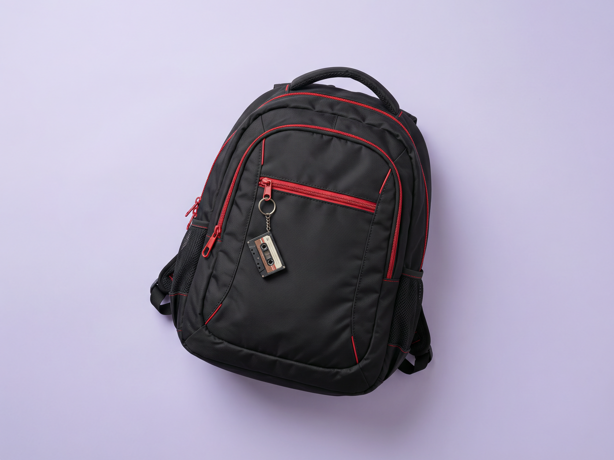
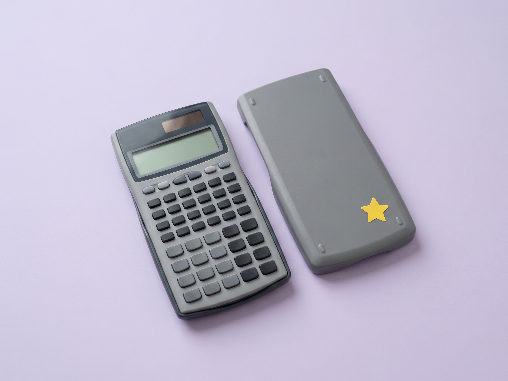
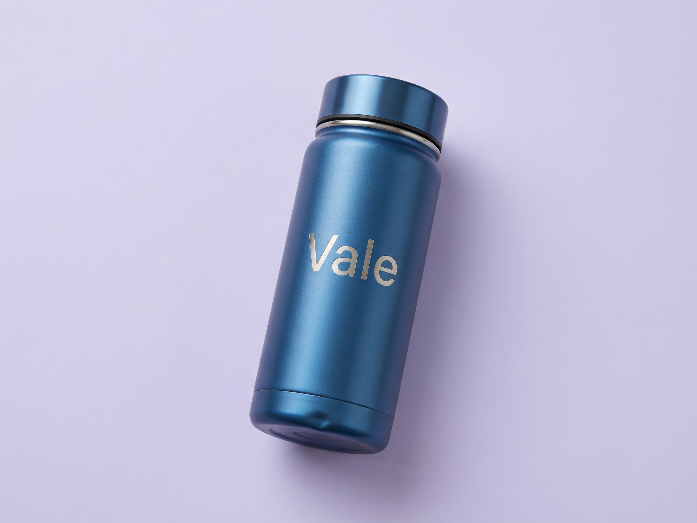
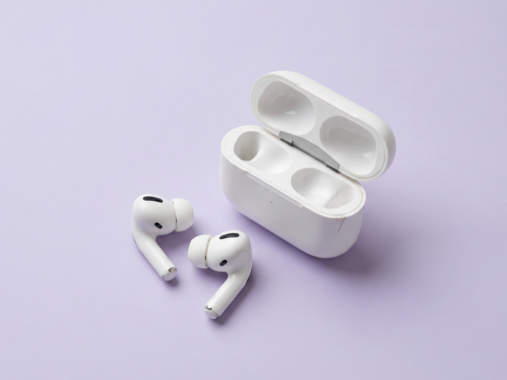
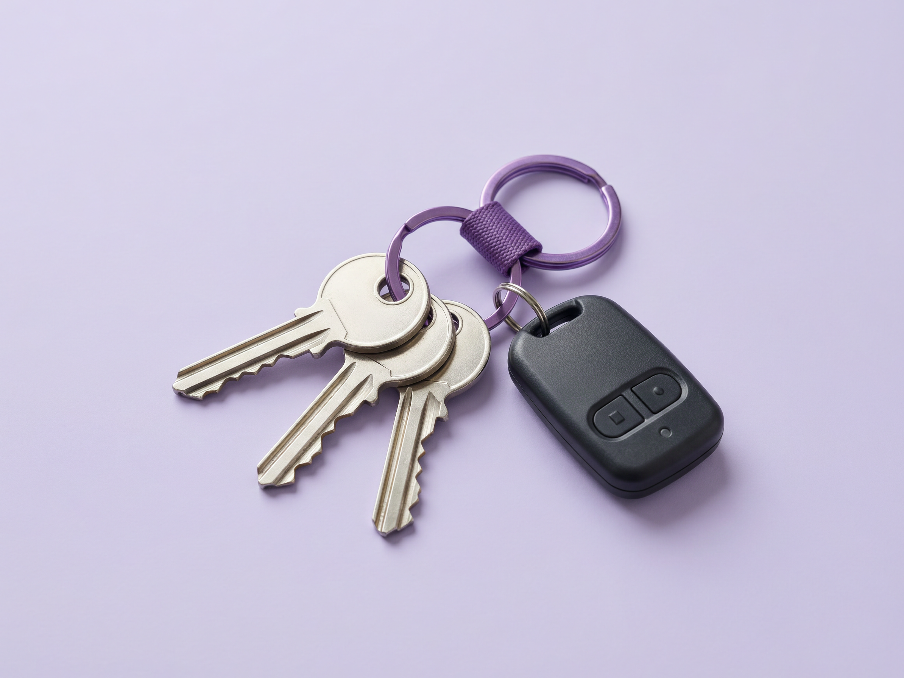

Objetos
Perdidos
Busca tu objeto, revisa su estado o reporta uno para ayudar a devolverlo.
Objetos recientes
Estos son los últimos objetos que se han reportado.

PerdidoMochila negra
TipoMochila
ColorNegro con rojo
MarcaJanSport
Fecha6 oct 2026
LugarBiblioteca Central, 2do piso
Trae una laptop gris, un cuaderno de cálculo y un llavero de cassette.
Lo encontré
EncontradoCalculadora científica
TipoElectrónico
ColorGris
MarcaCasio
Fecha5 oct 2026
LugarIngeniería, salón A-204
Tiene una calcomanía de estrella en la tapa. Se puede recoger en servicios escolares.
Es mío
RecuperadoTermo azul
TipoTermo
ColorAzul
MarcaStanley
Fecha3 oct 2026
LugarGimnasio, gradas norte
Está abollado de abajo y tiene el nombre Vale grabado. Ya se entregó.
Caso cerrado

PerdidoAudífonos
TipoElectrónico
ColorBlanco
MarcaSony
Fecha2 oct 2026
LugarCafetería central
El estuche tiene una raya en la esquina. Se quedaron en una mesa junto a la ventana.
Lo encontré
EncontradoLlaves
TipoLlaves
ColorPlateado
MarcaSin marca
Fecha30 sep 2026
LugarEstacionamiento 3
Son tres llaves y un control de portón. Para entregarlas hay que describir el llavero.
Es míoCredencial
TipoDocumento
ColorBlanco y azul
MarcaNo aplica
Fecha27 sep 2026
LugarExplanada de Rectoría
Tiene un porta gafete con cordón morado. Se entregó el 29 de septiembre.
Caso cerrado
¿Perdiste o encontraste algo?
Llena el formulario y lo agregamos a la lista.